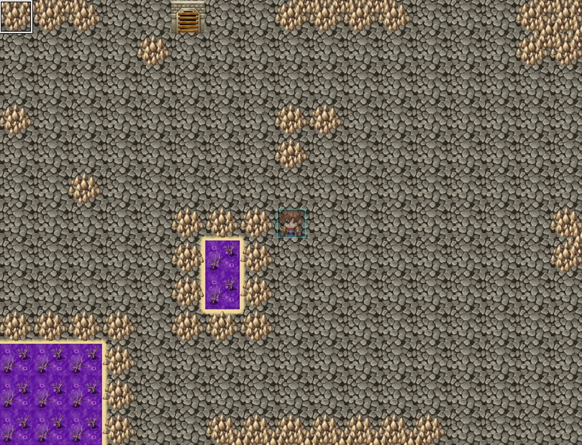
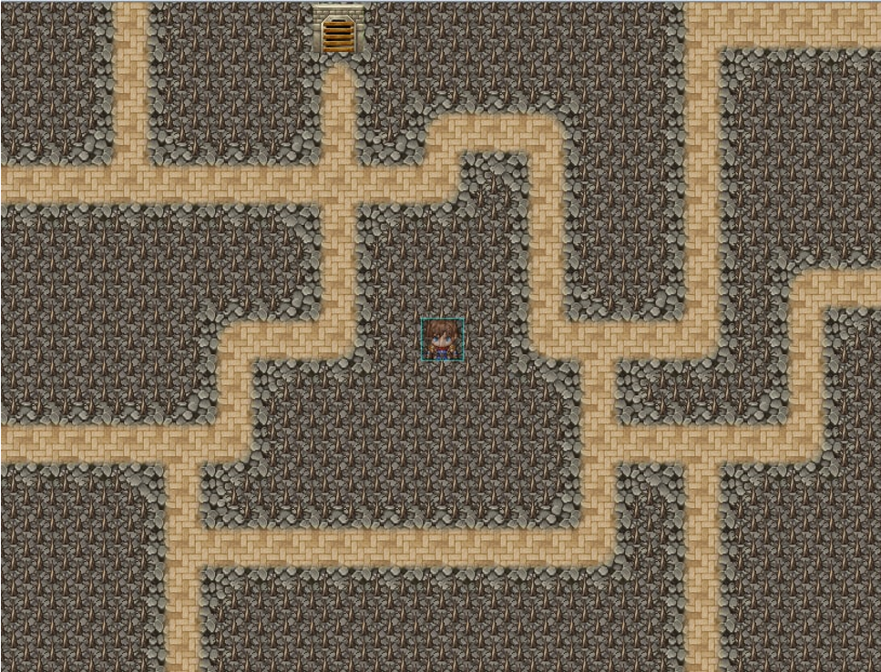
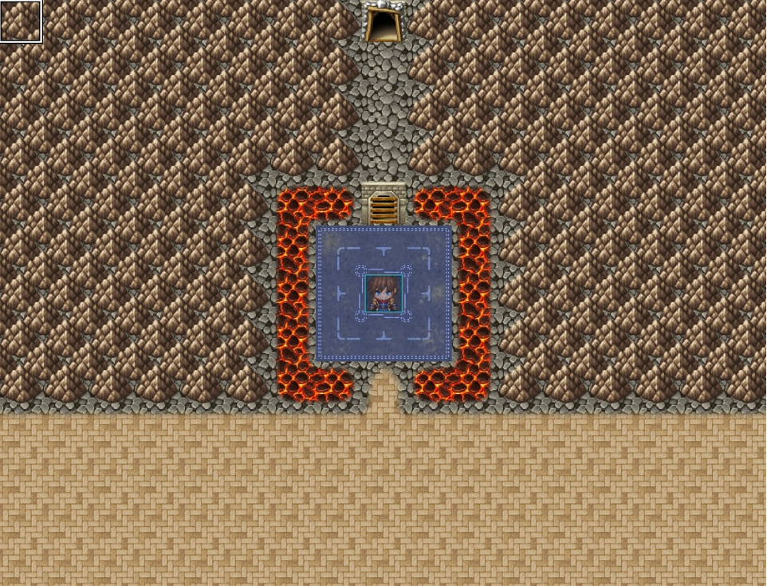
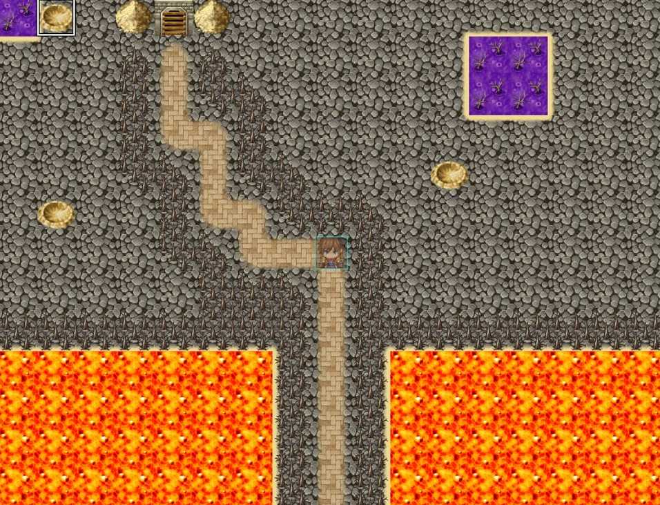
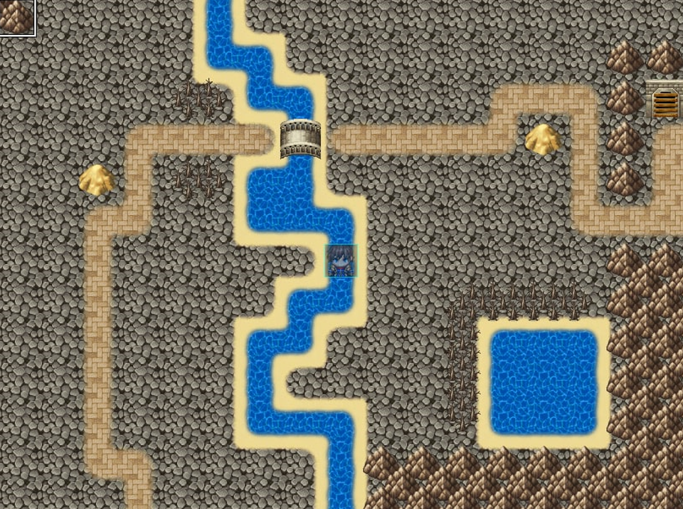
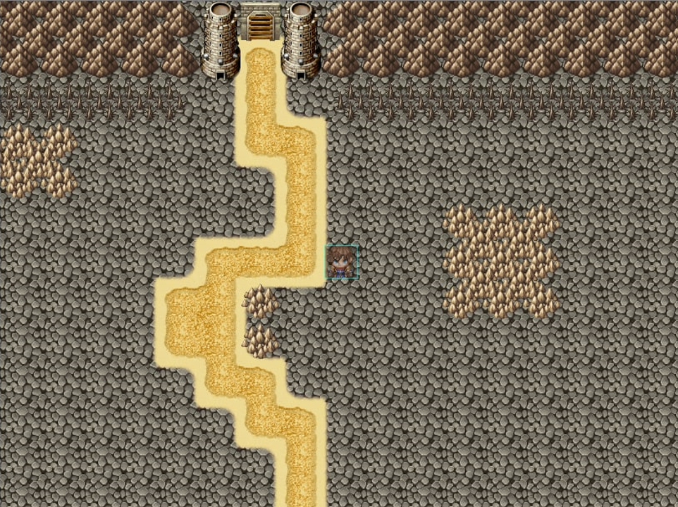
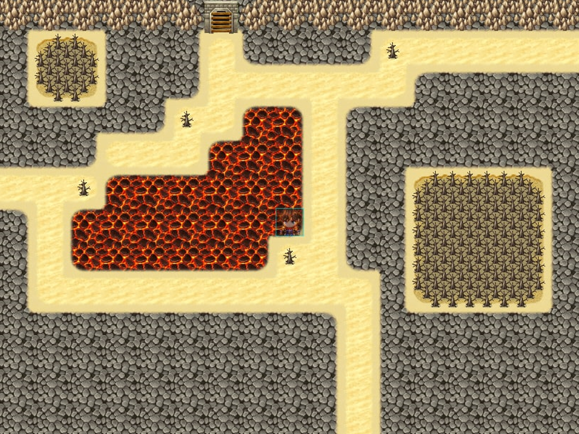
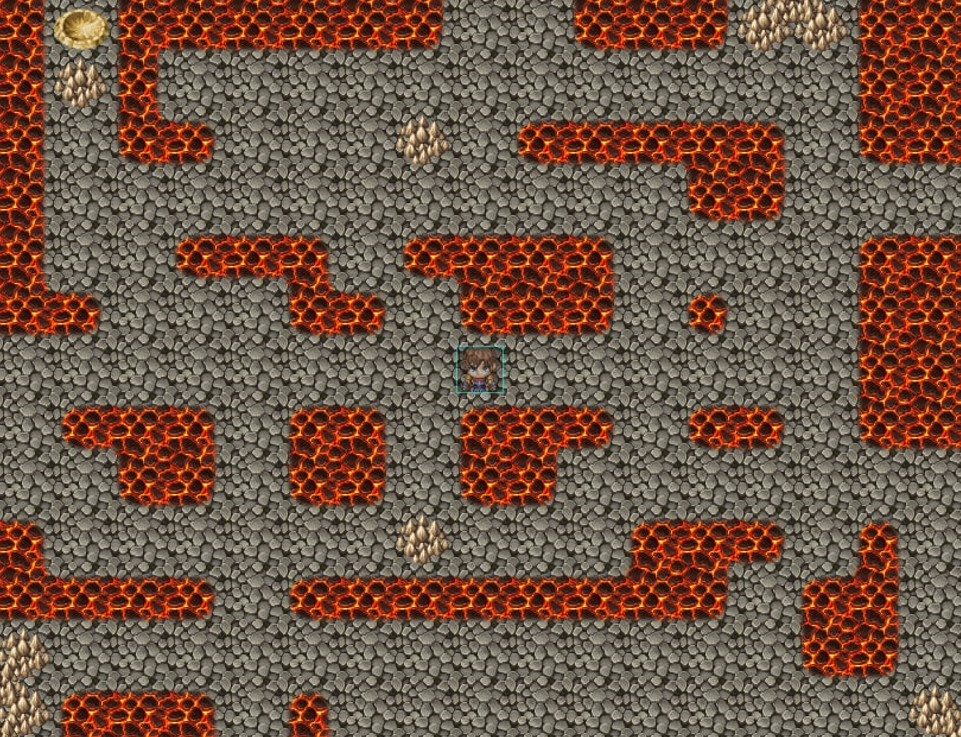

En este nivel, el personaje principal deberá enfrentarse con los mounstruos, los orcos grandes, estos
intentarán derrotar a Siul, y el deberá matarlos hasta que uno de ellos deje una llave con la que
podrá pasar al siguiente nivel.
En este nivel, Siul empezará a enfrentarse son mounstruos más difíciles, en este nivel aparecerán los
orcos pequeños y también se añadirán unos pinchos situados en el suelo, los cuales le quitan salud
tanto a los mountruos como al personaje principal.
Este nivel tambien aplica un nuevo objeto, que son las cajas, las cuales dropearan diferentes objetos
que pueden ser útiles en un futuro.
En este nivel, también se incrementan nuevos mounstruos que son más dificiles de superar, y que tienen
un menor porcentaje de que dropeen la llave para pasar al siguiente nivel.
Estos mounstruos son ambos tipos de orcos (pequeños y grandes), los cuervos, y el jefe de los orcos, un
miniboss que se encuentra al final de este nivel.
Para este nivel se deberá usar más la inteligencia, ya que no habrá que matar moustruos, sino que habrá
que hacer un rompecabezas, que se realiza empujando rocas y estas se deberán llevar a unos hoyos.
Una vez se complete el rompecabezas se podrá pasar hasta el siguiente nivel, y se desbloueará
la tienda, donde se podrán comprar diferentes artículos
Este nivel implementará un nuevo mounstruo, que será el cíclope, y también habrá otros enemigos
aéreos, los cuervos, que serán muy complicados de matar si no se cuenta con un arma de largo alcance.
Esta sala tiene unicamente dos enemigos, las serpientes, que aunque no cuentan con un gran daño
son muy rápidas, y las brujas, que contarán con un gran alcance de ataque, por lo que será conveniente
que el personaje tenga un arma de largo alcance.
En esta sala se complica bastante la dificultad del juego ya que habrá brujas, serpientes y un nuevo
miniboss, que será Medusa, la cual cuenta con un gran alcance y tendrá el poder de dejar sin movimiento
al jugador durante unos segundos.
Una vez el jugador derrote a Medusa, esta dará la llave para la última sala.
Al comienzo de esta última sala, nos saldrá una cinemática donde aparecerá el jefe final que será un dragon
llamado Oravla, además tambien aparecerá todos los mounstruos que han aparecido a lo largo de todas las salas
para ayudar al jefe final a impedir que ganemos el juego.
